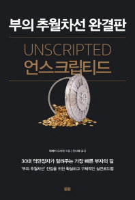

Book
PART 2 조작된 각본이 당신을 노예화한다
4. 조작된 게임 : ‘다른 사람들의 생각’에 갇힌 삶
5. 관습적 지혜 : 관습적 인생으로 가는 길
6. 각본화된 운영체계 : 노역의 거미집
7. 파종자들 : 우리 인생이 엉망이니 네 인생도 그래야 해
8. 가상현실 : 당신의 망상적 포획자들
9. 시간팔이 : 좋은 시간으로 나쁜 시간을 사다
10. 인생의 갈림길 : 두 개의 문, 하나의 도살장
11. 주의분산 : 대중매체가 하는 일
12. 모범(M.O.D.E.L.) 시민들